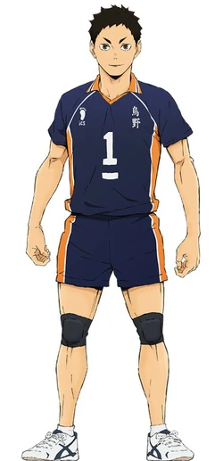

- Nome: Itsuki Daichi
- Idade: 18 anos 20 anos - formação
- Altura: 1,92m
- Ocupação: Estudante Futuro feiticeiro
- Relacionamentos: Gojo Keiko - futura esposa
Escola Okinawa - família adotiva
Clã Itsuki - família
Gigante Gentil com Passado Conturbado
O jovem que foi primeiro a receber os novos alunos com um sorriso no rosto, segurando um bolo queimado e duro como pedra que ele fez mais cedo.
Esse é o Daichi, o mais velho da turma, exemplo de dedicação, educação, força de vontade e cuidado com os seus.
Ele é um restringido, alguém que nasceu sem energia amaldiçoada, no qual tem que se esforçar para poder competir com quem nasceu com talentos por causa de seus clãs.
O que ninguém espera é que seu pai era uma pessoa horrível que não se importava com ninguém, engravidando inúmeras mulheres do clã Gojo e colocando seus filhos em um treino desumano entre eles, procurando criar a arma perfeita com os poderes de ambos os clãs, destruindo os Gojo e tomando o topo da hierarquia.
Curiosidades
-
Mesmo que não tenha sido feito o desenho, aqui está o que deveria ser a roupa que o Daichi usa durante o RPG.
Aqui está a referência
E seu design foi retirado do anime Haikyuu! do Daichi Sawamura.
- Gosta de animes de romance e shoujo.
-
Morreu na última sessão, tomamos um decisão ruim o deixando para enfrentar um inimigo que um dia foi aliado, enquanto fomos atrás do vilão por trás dos acontecimentos. Aconteceram muitas mortes, mas a dele acabou com o clima do RPG.
- Se ele tivesse sobrevivido, teria se casado com a minha personagem Gojo Keiko e teriam quatro filhos.